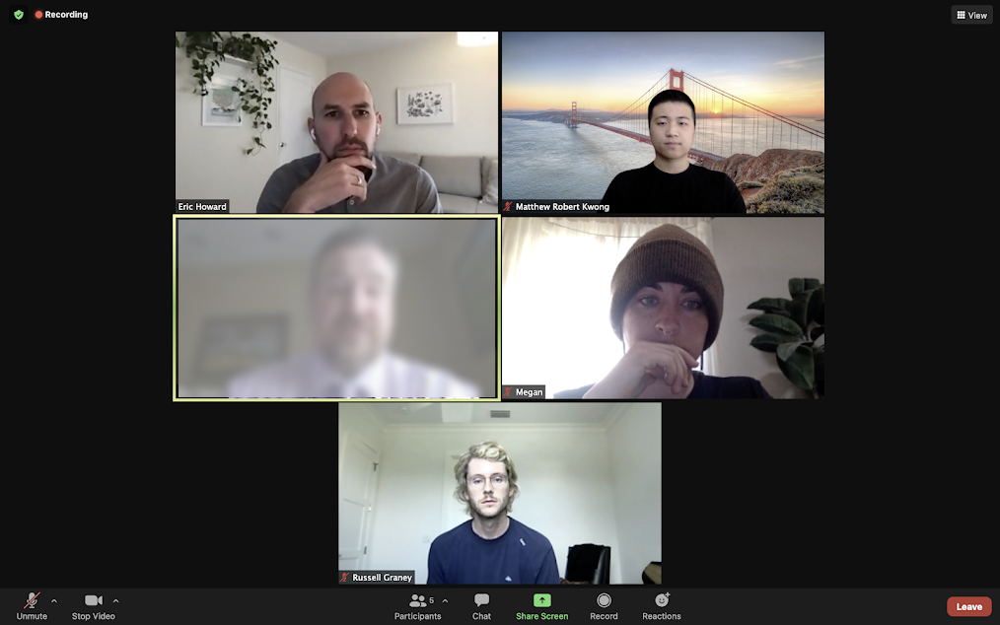

Conducting user research to ease healthcare transitions
UX Researcher
Figma, FigJam, Zoom, Notion, Google Docs
10 Weeks
Fathom
I conducted user research for our client Aidin, to help them find what standard and power users liked and disliked about their platform.
To get a better understanding of some of the current problems within the Aidin platform, our team created a set of questions asking our interview participants questions and demonstrations such as asking them to walk us through their workflow or “How much of an impact does the Aidin score have on your decisions?”.
To truly understand the need for change within the Aidin platform, I attended user interviews with our team via Zoom, taking notes on their question responses and the emotions they evoked while using different parts of the platform.
Once we completed each interview, I sorted out key quotes and content that would be beneficial for the Aidin team to see.
From these selected notes, I filtered them further into sticky notes of the most important and strongly opinionated statements from each of the interview participants. Finally, they were categorized based on their similarities. For example: messaging features or bugs.
Lastly, we created an insights and recommendations presentation that informed the Aidin team of our findings, highlighting the feedback from our interviews along with recommendations we had for them.
User research is more than just interviewing and designing based on the things you find, but actually empathizing with those you interview and truly understanding their point of view.